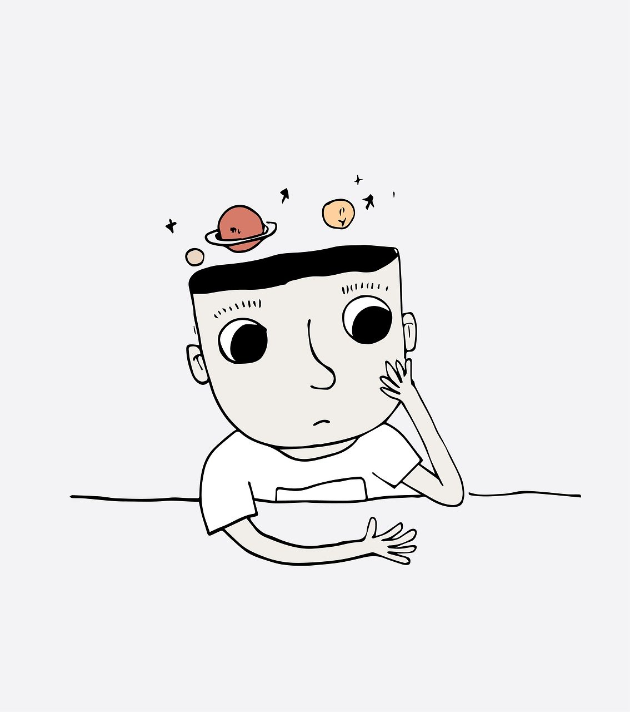

La ciencia basada en hechos observables
Debemos tener cuidado con lo que observamos pues no siempre resulta ser lo que creemos

La vista siempre ha jugado un papel fundamental al momento de hacer ciencia, pero también es cierto que debemos tener cuidado con lo que observamos pues no siempre resulta ser lo que creemos. Dos personas podrían estar mirando el mismo fenómeno, pero ser procesado de formas diferentes por cada individuo de acuerdo con sus experiencias previas y su manera de pensar. Por eso la colaboración científica y el trabajo en equipo se torna tan importante a la hora de generar conocimiento. Hay muchos factores que influyen al momento de hacer una observación puesto que lo que ve un observador resulta afectado por su conocimiento y experiencia, de ahí que la ciencia se deriva de los hechos observables, de las cosas que podemos ver, oír y tocar, mas no en la imaginación especulativa. De esta idea surge dos escuelas filosóficas que formalizan este pensamiento, los empiristas1 y positivistas2. Para el empirismo la experiencia es la base de todo conocimiento, no solo en cuanto a su origen sino también en cuanto a su contenido. Se parte del mundo sensible para formar los conceptos y su justificación. Los positivistas también creen que el conocimiento se deriva exclusivamente de la experiencia de los fenómenos naturales difiriendo con los empiristas en que el conocimiento auténtico es conocimiento científico. Sin embargo, este aspecto está implícito en la constatación de que uno tiene que aprender para llegar a ser competente en ciencia.
A pesar de esto uno como persona debe estar abierto a nuevos conocimientos, debe estar dispuesto a observar, más que a ver, porque cuando vemos no significa que analicemos lo que hay en nuestro alrededor, pasamos por alto cosas que creemos indispensables pero que pueden marcar la diferencia. Por consiguiente, la ciencia basada en los hechos solo puede ser verificada gracias al intercambio de información.
Bibliografía
- Baird, Forrest E.; Walter Kaufmann (2008). From Plato to Derrida. Upper Saddle River, New Jersey: Pearson Prentice Hall
- John J. Macionis, Linda M. Gerber, Sociology, Seventh Canadian Edition, Pearson Canada
- Chalmers, A. (1976). ¿Qué es esa cosa llamada ciencia? Reino Unido. Ed, Universidad de Queensland